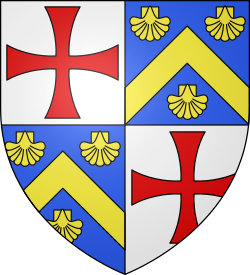
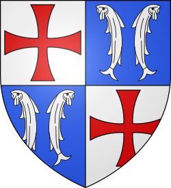
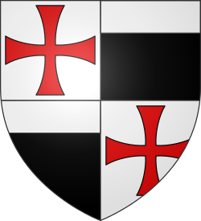
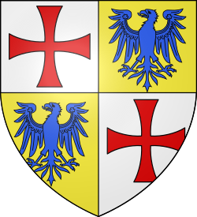
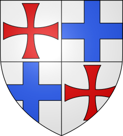
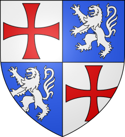
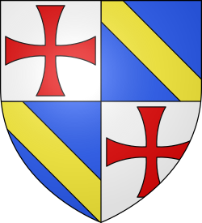

Les Templiers
Les Templiers
Histoire - Grands Maîtres - Symboles
 Hugues de Payns (1070-1136)
Hugues de Payns (1070-1136)
Fondateur et Grand Maître de 1118 à 1136
Hugues de Payns n'avait pas d'armoiries personnelles car l'héraldique ne vit le jour qu'au XIIème siècle.
 Robert de Craon (10??-1147)
Robert de Craon (10??-1147)
Grand Maître de 1136 à 1147
Compagnon d'Hugues de Payns, il est un des neuf chevaliers fondateurs de l'Ordre.
Evrard des Barres (1113-1174)
Grand Maître de 1147 à 1151
Il a renoncé à sa fonction pour entrer comme simple moine dans l'ordre cistérien à l'abbaye de Clairvaux.
 Bernard de Tremelay (10??-1153)
Bernard de Tremelay (10??-1153)
Grand Maître de 1151 à 1153
Avant sa nomination, il était précepteur de la commanderie jurassienne du Temple-lès-Dôle.
André de Montbard (10??-1156)
Grand Maître de 1154 à 1156
Dernier des neuf fondateurs de l'Ordre, il quitte sa fonction pour la même raison qu'Evrard des Barres.
 Bertrand de Blanchefort (1109-1169)
Bertrand de Blanchefort (1109-1169)
Grand Maître de 1156 à 1169
Il entrepend une réforme en profondeur de la règle (les "Retraits") qui précise les usages hiérarchiques.
Philippe de Milly (1128-1178)
Grand Maître de 1169 à 1171
Il réussit à renouer une relation de confiance entre l'Ordre et Amaury Ier, roi de Jérusalem.
 Eudes de Saint-Amand (11??-1179)
Eudes de Saint-Amand (11??-1179)
Grand Maître de 1171 à 1179
Capturé à l'issue de la bataille du Marj' Ayûn, il meurt dans les geôles de Saladin, à Damas.
 Arnaud de Toroge (1110-1184)
Arnaud de Toroge (1110-1184)
Grand Maître de 1180 à 1184
Ancien Maître de Provence et d'Aragon, il a surtout été présent en Espagne dans la "Reconquista".
 Gérard de Ridefort (1141-1189)
Gérard de Ridefort (1141-1189)
Grand Maître de 1184 à 1189
Son orgueil et sa folie haineuse provoqueront le désastre des cornes de Hattîn (30000 croisés tués).
Robert de Sablé (11??-1193)
Grand Maître de 1191 à 1193
Allié de Richard Cœur de Lion, il est élu après que la maîtrise de l'Ordre soit restée vacante durant 2 ans.
Gilbert Horal (1152-1200)
Grand Maître de 1193 à 1200
Durant son magistère, les querelles entres Templiers et Hospitaliers deviennent catastrophiques.
 Philippe du Plessis (1165-1209)
Philippe du Plessis (1165-1209)
Grand Maître de 1201 à 1209
C'est sous son magistère que l'Ordre arrive à l'apogée de son développement en Europe.
 Guillaume de Chartres (11??-1218)
Guillaume de Chartres (11??-1218)
Grand Maître de 1210 à 1218
Il s'occupe beaucoup de la "Reconquista" espagnole : Très forte influence des Templiers en terre ibérique.
 Pierre de Montaigu (11??-1232)
Pierre de Montaigu (11??-1232)
Grand Maître de 1218 à 1232
Fait preuve d'une grande diplomatie pour réconcilier le roi de Jérusalem, le pape et les Hospitaliers.
 Armand de Périgord (1178-1244)
Armand de Périgord (1178-1244)
Grand Maître de 1232 à 1244
Meurt à La Forbie où Templiers, Hospitaliers et Teutoniques affrontent le Sultan d'Egypte.
 Richard de Bures (11??-1247)
Richard de Bures (11??-1247)
Grand Maître de 1244 à 1247
Tire son nom de la baillie de Bures-les-Templiers en Côte d'Or, berceau de l'Ordre en France.
 Guillaume de Sonnac (11??-1250)
Guillaume de Sonnac (11??-1250)
Grand Maître de 1247 à 1250
Homme sage et prudent, il fait codifier les archives de l'Ordre avant de les mettre en lieu sûr.
 Renaud de Vichiers (1198-1252)
Renaud de Vichiers (1198-1252)
Grand Maître de 1250 à 1252
Il a laissé Joinville voler l'argent de l'Ordre qui a servi à libérer Louis IX des Mamelouks.
 Thomas Béraud (12??-1273)
Thomas Béraud (12??-1273)
Grand Maître de 1252 à 1273
Personnage énigmatique, sa carrière au sein de l'Ordre est inconnue des historiens.
 Guillaume de Beaujeu (1233-1291)
Guillaume de Beaujeu (1233-1291)
Grand Maître de 1273 à 1291
Malgré une défense héroïque, il succombe lors de l'assaut final des musulmans contre la ville d'Acre.
Thibaud Gaudin (1229-1292)
Grand Maître de 1291 à 1292
Meurt d'épuisement en tentant de remettre en route l'organisation mise à mal par les dernières batailles.
Jacques de Molay (1244-1314)
Grand Maître de 1292 à 1312
Après 7 ans de captivité aux mains de l'Inquisition, il meurt sur le bûcher, le 18 mars 1314.